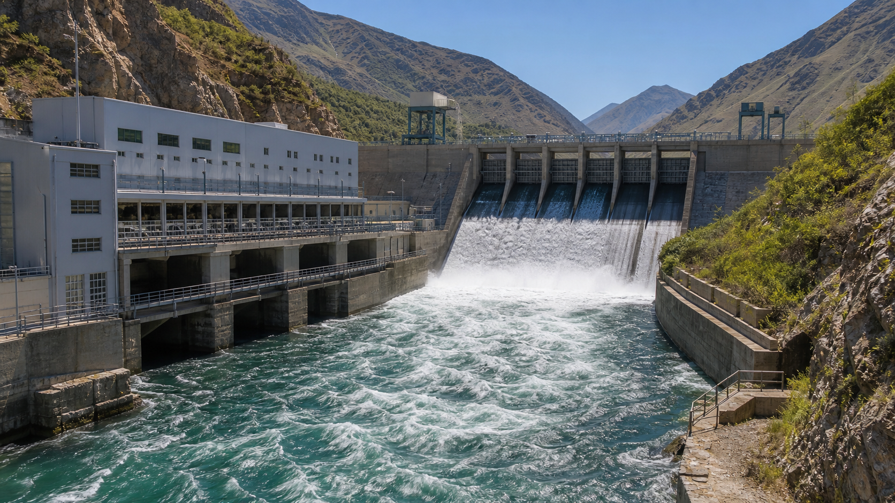
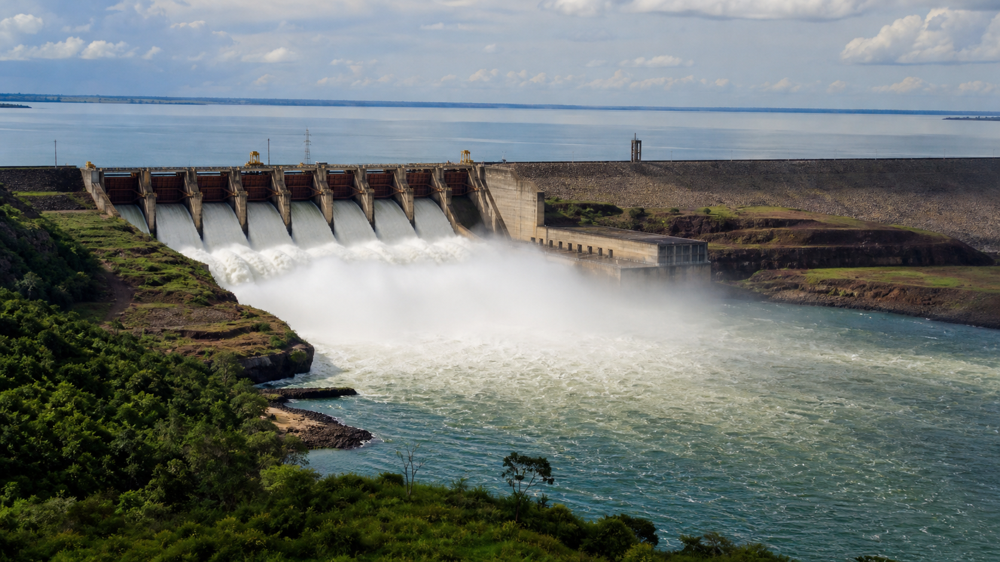

¿Qué es?
La energía hidroeléctrica aprovecha la energía potencial del agua acumulada en un embalse a gran altura. Cuando el agua se libera, cae por tuberías de presión y hace girar turbinas conectadas a generadores eléctricos. Es la tecnología de generación renovable más antigua, madura y eficiente de todas.
Existen tres tipos principales de centrales hidroeléctricas. Las centrales de embalse almacenan grandes volúmenes de agua detrás de una represa y la liberan según la demanda, lo que permite regular la generación. Las centrales de pasada (o filo de agua) no tienen un gran reservorio y generan según el caudal del río, sin posibilidad de almacenamiento significativo. Las centrales de bombeo funcionan como una "batería gigante": bombean agua a un embalse superior cuando hay excedente de energía y la liberan cuando se necesita generar.
La cantidad de energía que puede generar una central hidroeléctrica depende de dos factores: el caudal (volumen de agua por segundo) y el salto (altura desde la que cae el agua). A mayor caudal y mayor altura, más potencia disponible. Por eso las mejores ubicaciones son en valles de montaña con ríos caudalosos.
Usos
La función principal de la hidroeléctrica es la generación eléctrica de base: las represas pueden funcionar las 24 horas del día, los 7 días de la semana, proporcionando energía firme y confiable al sistema. Además de la generación, las represas cumplen otros roles importantes:
- ▸Regulación de caudales: Las represas controlan el flujo de los ríos, ayudando a prevenir inundaciones aguas abajo y asegurando un caudal mínimo en épocas de sequía.
- ▸Riego agrícola: Los embalses almacenan agua para riego, permitiendo la agricultura en regiones áridas o con lluvias irregulares.
- ▸Recreación y turismo: Los lagos artificiales formados por las represas se utilizan para deportes náuticos, pesca y turismo.
- ▸Abastecimiento de agua potable: Algunos embalses proveen agua a poblaciones cercanas.
Rendimiento
La energía hidroeléctrica es la fuente de generación más eficiente de todas. Las turbinas y generadores modernos convierten entre el 70% y 90% de la energía potencial del agua en electricidad. Para ponerlo en perspectiva: la solar convierte 15-22%, la eólica 40-50% y las centrales térmicas a gas natural 35-45%.
El factor de capacidad de las centrales hidroeléctricas oscila entre 40% y 60%, aunque depende fuertemente de la disponibilidad de agua. En años húmedos, las centrales pueden operar a plena capacidad durante meses; en años secos, la generación se reduce drásticamente. La sequía de 2020-2023 en Argentina mostró claramente esta vulnerabilidad.
Otra gran ventaja es la vida útil: las turbinas hidroeléctricas pueden operar durante 50-100 años con mantenimiento adecuado. Muchas represas construidas en la primera mitad del siglo XX siguen funcionando. El costo operativo es muy bajo una vez construida la central, ya que el "combustible" (el agua) es gratuito y se renueva naturalmente.
Lugar en Argentina
Las principales cuencas hidroeléctricas de Argentina se concentran en dos regiones:
- ▸Región del Comahue (Patagonia): Los ríos Limay, Neuquén y Negro concentran la mayor potencia instalada del país. Aquí se encuentran El Chocón (1.200 MW), Piedra del Águila (1.400 MW), Alicurá (1.000 MW), Cerros Colorados y Planicie Banderita. Es el complejo hidroeléctrico más importante de Argentina.
- ▸Litoral: Yacyretá (1.550 MW) sobre el río Paraná, en la frontera con Paraguay, y Salto Grande (1.890 MW compartido con Uruguay) sobre el río Uruguay.
- ▸Patagonia Sur: Futaleufú (472 MW) en Chubut, y el proyecto Kirchner-Cepernic (aún en construcción) sobre el río Santa Cruz, que sumará más de 1.200 MW adicionales.
Argentina tiene un potencial hidroeléctrico remanente significativo, especialmente en la Cordillera de los Andes y en la Patagonia, aunque los proyectos nuevos enfrentan cada vez más restricciones ambientales y sociales.

En la matriz energética
La energía hidroeléctrica representa aproximadamente el 22% de la generación eléctrica total de Argentina. Es, con diferencia, la mayor fuente renovable del país. Sin embargo, su participación ha disminuido desde el ~35% que representaba antes del boom del gas natural en la década de 2000.
La generación hidroeléctrica es altamente dependiente de las lluvias. En años húmedos, las represas pueden satisfacer una porción mucho mayor de la demanda; en años secos, como la sequía de 2020-2023, la generación cae y es necesario reemplazarla con centrales térmicas (gas natural, fuel oil), que son más caras y contaminantes. Esta variabilidad es uno de los principales desafíos del sistema eléctrico argentino.
A pesar de la caída en su participación relativa, la hidroeléctrica sigue siendo la fuente de energía limpia más importante del país y un pilar de la estabilidad del sistema eléctrico, ya que las represas pueden ajustar su generación rápidamente para responder a cambios en la demanda.
Implicancia real
Yacyretá es la represa más grande de Argentina, con 1.550 MW de potencia instalada y una generación media de 4.100 GWh por año. Construida sobre el río Paraná en la frontera con Paraguay, su construcción duró más de 40 años y generó controversia por el desplazamiento de poblaciones (más de 40.000 personas reubicadas) y el impacto ambiental sobre los humedales del Iberá.
El Complejo El Chocón-Alicurá-Piedra del Águila, sobre el río Limay en Neuquén, forma el sistema hidroeléctrico más importante del país, con más de 3.600 MW combinados. Estas represas, construidas entre las décadas de 1970 y 1990, fueron parte de un ambicioso plan de desarrollo energético que transformó la región del Comahue.
La sequía de 2020-2023 fue un recordatorio de la vulnerabilidad hidroeléctrica: la generación cayó a niveles históricamente bajos, obligando a importar energía de Brasil y a quemar combustibles fósiles más caros. El cambio climático podría hacer que estos eventos sean más frecuentes. Por otro lado, las represas siguen siendo la fuente de energía limpia más importante del país, evitando la emisión de millones de toneladas de CO₂ cada año.

Ventajas y desventajas
Ventajas
- ✓Altísima eficiencia: 70-90%, la más alta de todas las fuentes de generación.
- ✓Generación constante y predecible: funciona las 24 horas del día.
- ✓Larga vida útil: 50-100 años con mantenimiento adecuado.
- ✓El embalse funciona como una batería: almacena energía para usarla cuando se necesita.
- ✓Bajo costo operativo: el agua es gratuita y las centrales requieren poco personal.
- ✓Regula caudales de ríos y ayuda a prevenir inundaciones.
Desventajas
- ✗Alto impacto ambiental: inunda grandes extensiones de tierra y altera ecosistemas acuáticos.
- ✗Desplazamiento de comunidades: Yacyretá reubicó a más de 40.000 personas.
- ✗Dependiente de lluvias: el cambio climático puede reducir la disponibilidad de agua.
- ✗Alto costo de construcción y largos plazos de obra (décadas en algunos casos).
- ✗Riesgo de rotura de represas: aunque poco frecuente, las consecuencias son catastróficas.
- ✗Acumulación de sedimentos reduce la capacidad del embalse con el tiempo.